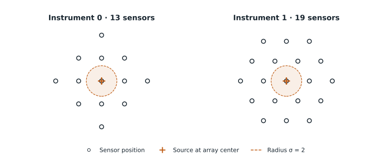
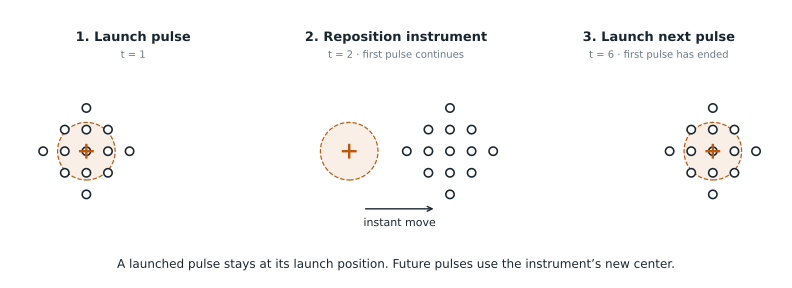

Experiment & predict
Experiments become predictions
A laboratory makes a world repeatable and observable. An agent uses its instruments to learn a predictive model.
The investigator receives an anonymous instrument interface, a Python workspace, and declared resource budgets. It chooses interventions and measurements, analyzes the returned arrays, and writes a function that predicts the outcomes of further experiments.
Preparing a laboratory
The field equations allow many initial conditions. A preparation fixes one exact starting field array, instrument arrangements, a time origin, and a noise policy. These belong to the laboratory built around a world; a single world can support several preparations.
Each experiment restores the saved fields and instrument poses, then draws fresh ongoing noise. It does not restart from an empty domain or a newly randomized collection of spots. This makes repeated treatments comparable while retaining uncertainty in their outcomes. Public time zero is the beginning of this continuation, regardless of how long it took to produce the starting state.
The original p4g2_044 preparation saves fields at simulation time 1700. The BF and XV laboratories use endpoints of fresh 2500-unit simulations: BF from its selected initial realization and XV from a prepared pair without an initial kick. Their numerical settings are those described in Worlds. A research movie can show another portion of a simulation and should not be interpreted as a trace from one of these experiments.
Measuring and perturbing fields
Every field is exposed through an anonymous numbered port. A port can therefore correspond to an activator or a feedback channel; its physical identity is hidden from the agent. The current laboratories have twelve ports for p4g2_044, four for BF, and six for XV.
Each of two independently movable instruments carries a source at the center of a sensor array. One array has 13 positions on a square lattice; the other has 19 on a hexagonal lattice. Each sensor measures every field at its location, interpolating between nearby simulation grid points. A separate global sensor reports each field's spatial mean and population variance.

This apparatus gives the investigator a repeatable relationship between intervention and observation. Readings at different positions around a source can reveal how a disturbance spreads, decays, or interacts with existing structures. Repositioning the instrument changes where the next experiment acts and observes; changing its dilation changes the spacing between its sensors.
A source pulse adds a localized Gaussian forcing to one selected field, with spatial standard deviation 2 units. At launch it captures the instrument's center; forcing continues there for the requested duration. Later movement carries the sensors and the launch point for future pulses, while already launched pulses stay where they began. The two sources can operate at the same time.
Adjustment has three controls: two translate the instrument through a hidden control mapping, and one changes array dilation, bounded between 0.5 and 3. The new pose takes effect immediately. Dilation changes sensor spacing around the source center; it does not change the Gaussian source width.
The agent learns through these measurements. It is not given the genome, equations, complete spatial fields, sensor coordinates, array orientation, slot mapping, or private grading programs and truth. The full physical description remains available to the trusted simulator and to researchers reproducing the laboratory.
Specifying an experiment
One experiment fixes all actions and requested readings in advance. Timestamps are absolute from the prepared start. The agent can adapt between experiments, but actions cannot react to observations during a single program.
actions = [
{"t": 1.0, "kind": "inject", "device": 0, "port": 2, "amp": 0.7, "dur": 4.0},
{"t": 2.0, "kind": "adjust", "device": 0, "u": [0.2, -0.4, 0.1]},
]
queries = [
{"sensor": "device0", "t": [0, 3, 12]},
{"sensor": "device1", "t": [12, 20]},
{"sensor": "global", "t": [20]},
]This program starts a pulse at instrument 0's initial center at time 1. The pulse continues there until time 5. Instrument 0 moves at time 2, so its later readings observe from the new pose while the original pulse continues at its launch position.

Through the agent's laboratory_experiment(actions, queries) tool, this request returns a file containing the observations. For a four-port laboratory such as BF, the agent can inspect it as follows:
import numpy as np
observations = np.load("/observations/experiment_001.npz")
observations["query0"].shape # (1, 3, 4, 13): realization, times, ports, slots
observations["query1"].shape # (1, 2, 4, 19)
observations["query2"].shape # (1, 1, 4, 2)
# Port 2 at every sensor slot of instrument 0, at time 3, after moving while the pulse is active:
observations["query0"][0, 1, 2, :] # 13 measured valuesA port has the same identity across both sources and all sensors, and each slot retains its identity as its instrument moves. The agent must learn the spatial relationships from experiments.
- Injection: select device 0 or 1, a port from 0 through
n_ports − 1, amplitude 0–3, and duration in(0, 50]. Forcing acts at the captured launch position on[t, t + dur). - Adjustment: select device 0 or 1 and three finite controls in
[-1, 1]. Pose changes immediately; that device's movement lane is occupied for five time units. - Each device has its own movement lane and injection lane. Different lanes may overlap or start simultaneously. Two actions on the same lane cannot overlap; adjacent endpoints are allowed.
- List actions in nondecreasing start-time order. At the same timestamp, actions execute in list order:
injectthenadjustuses the old center;adjusttheninjectuses the new center. - A zero-amplitude injection or zero-effect adjustment still occupies its lane.
Time
All times are absolute from the prepared start and nonnegative multiples of 0.02, with representation tolerance 1e-9. The maximum is 50 time units. Every action's entire occupied interval must end by 50, including actions after the last reading.
Event order
At an event time, ending pulse intervals are removed, starting actions execute in list order, and requested readings are taken. Probe adjustments change pose immediately. Source forcing is then applied before the next reaction, noise, and diffusion update. A source that starts at a reading's timestamp has not yet advanced the fields at that reading.
Queries and measurement arrays
{"sensor": "device0", "t": [0, 3, 12]}Times within each query must be strictly increasing without duplicates. The same timestamp may appear in different query objects, and query objects may appear in any order. Preserve their order in the result. A laboratory observation has shape (1, len(t), n_ports, sensor_slots): one realization, with axes for time, port, and sensor slot. A prediction uses the same layout with multiple possible realizations.
Returning possible trajectories
After experimentation, the agent submits a single prediction function for evaluation. It must predict outcomes for any valid combination of actions and measurement queries in the selected laboratory.
def predict(actions, queries, n_samples=64, seed=0):
# One array per query, in the same order.
# Shape: (members, requested times, n_ports, sensor slots)
return {"samples": arrays}The function returns exactly this dictionary, with one complete array per query. For the twelve-port laboratory and the example above, 64 members give shapes (64, 3, 12, 13), (64, 2, 12, 19), and (64, 1, 12, 2). Use the selected laboratory's port count when constructing a predictor.
| Sensor | Slots | Returned array shape |
|---|---|---|
device0 | 13 | (n_samples, len(t), n_ports, 13) |
device1 | 19 | (n_samples, len(t), n_ports, 19) |
global | 2: spatial mean, population variance | (n_samples, len(t), n_ports, 2) |
Every value must be finite. No implicit broadcasting, missing ports, extra keys, NaNs, or infinities are accepted. Empty queries and time lists are supported with the corresponding empty outputs; scored cases contain observations. Exact keys and numeric types matter: booleans are not numeric IDs.
Each member represents one possible trajectory. A deterministic predictor may repeat its estimate in every member; a stochastic predictor may express a non-Gaussian distribution.
Sample semantics
A member index represents one coherent trajectory across every time, query, and device in a call.
The same request and predictor seed must reproduce output. Adding future actions or queries must preserve earlier samples. The seed controls only predictor randomness, and the function has no access to experimental or grader seeds.
Exploration and submission
| Operation | Purpose |
|---|---|
experiment(actions, queries) | Run one physical realization and receive the requested arrays. |
usage() | Read consumed and remaining experiment resources. |
validate() | Run example requests to check that the predictor executes successfully and returns correctly formatted outputs. This checks compatibility, not prediction accuracy. |
submit() | Check and freeze the predictor and supporting files. Successful submission ends exploration. |
Validation runs a saved copy of the current predictor and supporting files. It checks imports and execution, output structure and dimensions, finite values, empty requests, and repeatability with the same seed. It does not compare predictions with simulated outcomes: a correctly formatted predictor that always returns zero can pass. After validation, the agent can continue editing; successful submission freezes the final artifact.
The native agent tools expose these operations with a laboratory_ prefix. Experiment, model, and execution budgets are specified for each run; they are not properties of the physical world.
The predictor and any learned parameters or supporting data are saved in the submitted artifact. The evaluator calls the frozen function on further experimental programs in an isolated runtime, without access to the experimental service. Forecasts are finalized before truth observations are loaded for scoring.
The next chapter defines how these distributions are scored and how a laboratory becomes an evaluation suite. For implementation, download the twelve-port example contract or use the runnable interface example.